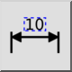
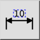
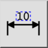
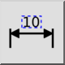

Restablecer posición de la etiqueta
Barra de herramienta / icono:
 

Menú: Dimensión > Restablecer posición de la etiqueta
Acceso directo: D, S
Comandos: dimregen | ds
Esta es una traducción automática.
Barra de herramienta / icono:
 

Menú: Dimensión > Restablecer posición de la etiqueta
Acceso directo: D, S
Comandos: dimregen | ds
Esta herramienta restablece la posición de la etiqueta de todas las entidades de dimensión seleccionadas y coloca su etiqueta de nuevo en su posición calculada automáticamente.